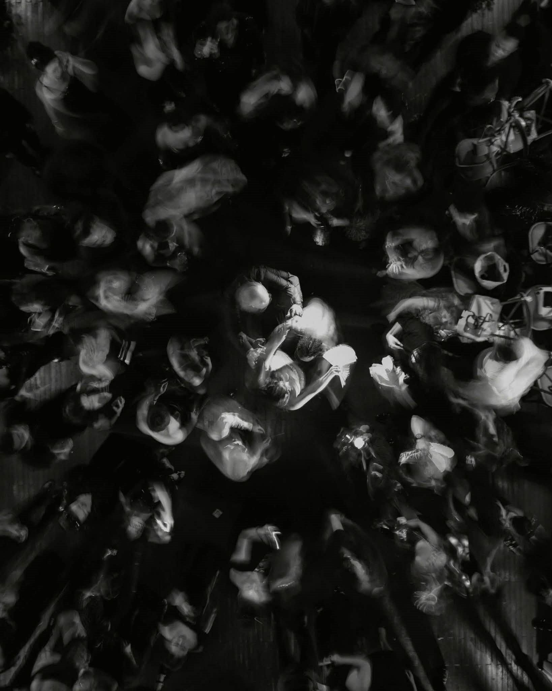
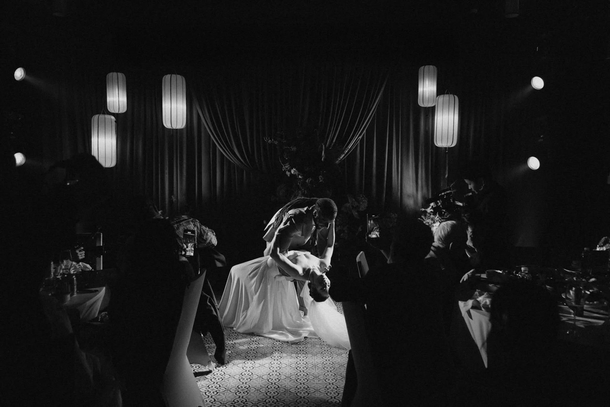
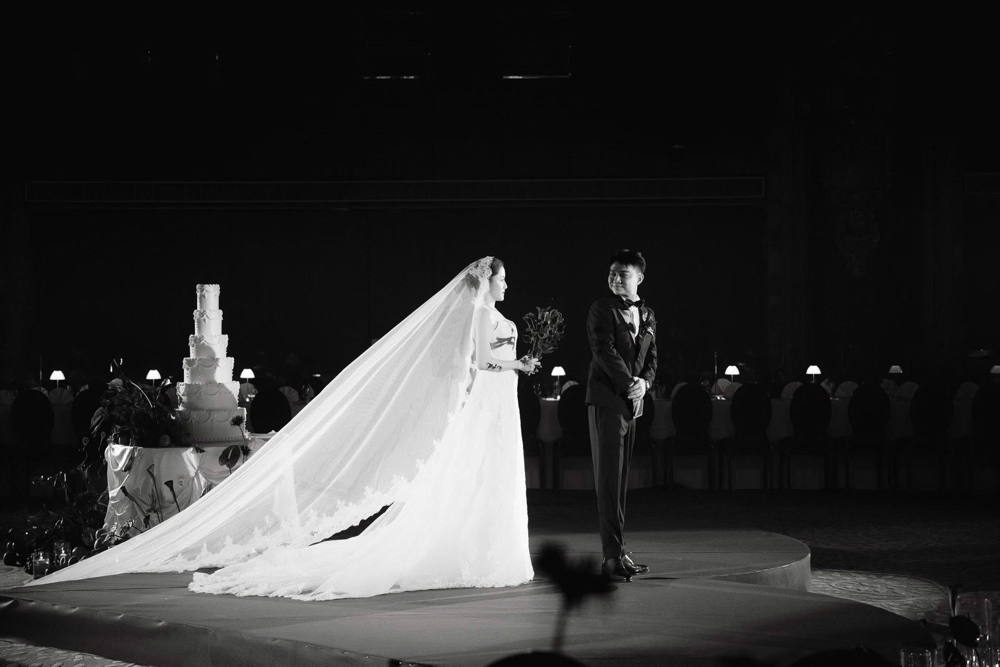
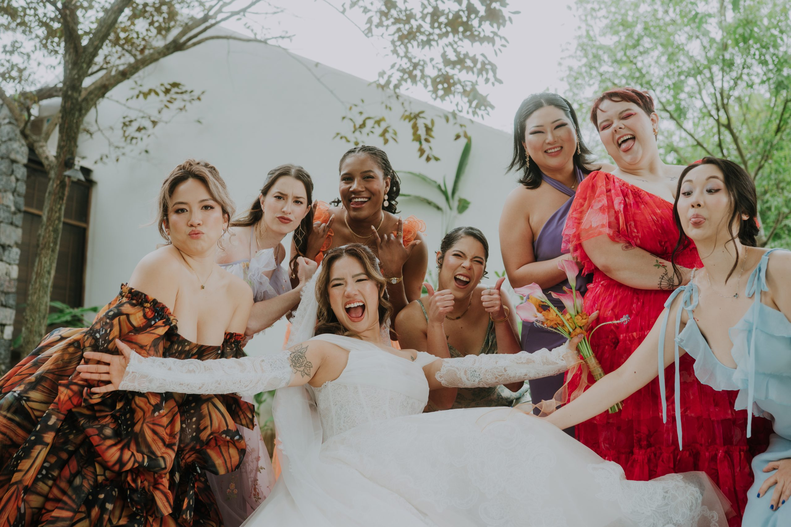

We begin with the life already there.
Before a venue, a palette or a guest list, there are the things that make a relationship recognisable: how you met, what you return to and the people who make a gathering feel like home.
A Wed in Style approach
Listen for the thing that is only yours.
We begin with a conversation, not a questionnaire. The stories, rituals and ordinary details you share are not decoration for a concept. They are where the concept starts.

Notice what keeps coming back.
Often the strongest direction is already present in a memory, a place, a familiar gesture or a shared appetite. We look for the detail that carries feeling — and give it enough room to become the thread through the day.

Let that thread shape every encounter.
The story then becomes choices that guests can feel: how they arrive, the way a space holds people, a material, a meal, a pause. The work is to make those choices belong together without announcing themselves.

One small truth can hold an entire day.
For Catherine and Johnny, a shared cup of milk tea became the starting point for a celebration reached by boat across the quiet water of Ninh Binh. The point was not to turn the detail into a theme — it was to let it lead the feeling of the day.
See the storyTell us what you keep returning to.
We will begin with the place, people or small truth that already feels like the two of you.
Begin the conversation